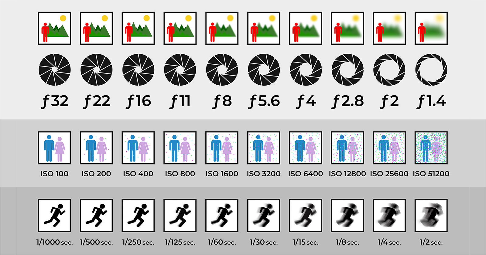

| Black and White Photo Galleria and Urban Photography Galleria | ||
|---|---|---|
| Home Page | Black and White Photography Galleria | Urban Photography Galleria |

Hello my name is Makhi Austin, I am originally from Atlanta, Georgia. I'm a junior computer science major at the Xavier University of Louisiana.
One of my favorite hobbys that I have developed over the past year
is photography. This is a relaxing pastime that I can see myself doing for the rest of my life. I find there is always beauty in creating this kind of
art, since the possibilites are never ending in this field. Countless photographers have created great collections of work that are unique and will stand the tests of time.
On this website I will be showcasing some of my photography work thus far. The image directly to the right of this text is an exposure chart.
Exposure directly relates to how an image looks, it is comprised of camera Shutter Speed, ISO, and Aperture. If these three aforementioned tools are used in a correct manner,
it can yield a vairety of photos. Yet these mechanics must be properly measured based on the environment, since depending
on the amount of light present, a picture can be taken underexposed or overexposed.